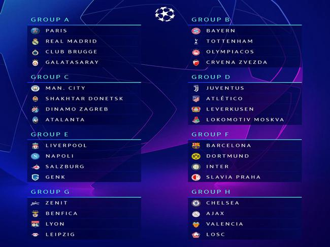
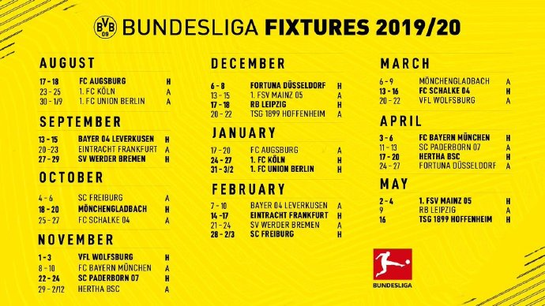
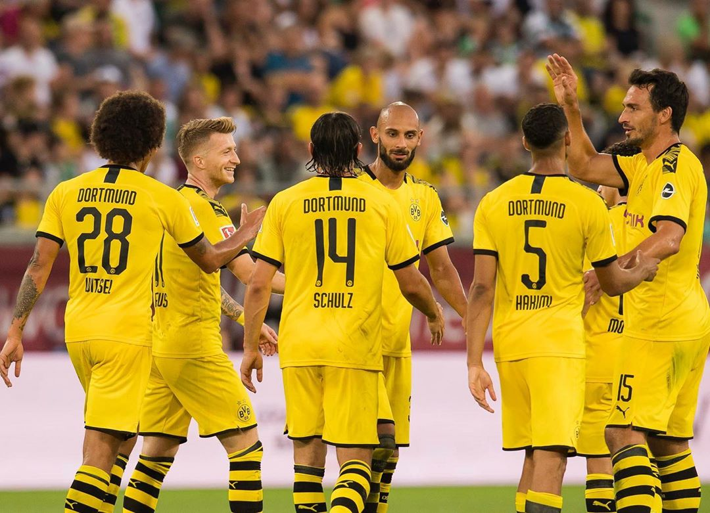
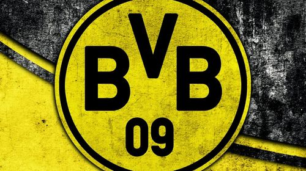

写在输给柏林联合之后
“曾几何时，我们也是那样一支热烈而纯粹的平民球队。”
柏林有两支球队，柏林赫塔 and 柏林联合，其中柏林联合刚从德乙升上来。
北京时间9月1日 0：30，多特客场1：3柏林联合。
欧冠抽签之后
碎碎念
巴萨想踢多特，梅西说想来感受威斯特法伦的球迷氛围。多特想踢巴萨，罗伊斯除多特外最喜欢巴萨，当然，不排除有想去炫耀帕科的嫌疑。球迷也想看，印象中至少七八年内两队是没有交过手的。然而来了个国米，硬生生造出一个死亡之组…

9月18日多特主场迎战巴萨，这大概是我和肖儿比较难得地共同期待的一场比赛，她说她紧张，我可不紧张，内马尔又没去成巴萨。
抖个机灵：补时阶段，法夫尔换下了帕科，对坐了半个赛季板凳的格策说：“补时，世界杯，梅西。“ 格策用尽毕生运气绝杀巴萨，一年后出走多特…

那些这个赛季想关注的比赛
| 时间 | 时间 | 赛事 | 对手 | 主客场 | |
|---|---|---|---|---|---|
| 09-14 21:30 | 星期六 | 德甲第4轮 | 勒沃库森 | 主场 | |
| 09-18 03:00 | 星期三 | 欧冠 | 巴塞罗那 | 主场 | |
| 10-19 21:30 | 星期六 | 第8轮 | 门兴 | 主场 | |
| 10-24 03:00 | 星期四 | 欧冠 | 国际米兰 | 客场 | |
| 10-26 21:30 | 星期六 | 第9轮 | 沙尔克04 | 客场 | 鲁尔德比 |
| 11-06 04:00 | 星期三 | 欧冠 | 国际米兰 | 主场 | |
| 11-09 22:30 | 星期六 | 第11轮 | 拜仁 | 客场 | 国家德比 |
| 11-28 04:00 | 星期四 | 欧冠 | 巴塞罗那 | 客场 |
十月底有一段魔鬼赛程，其中就有主客场战国米，突然觉得板凳厚度依然不太够，还有，缺个高中锋。然而瓦总觉得最佳之人已在阵中，莫得办法…

附：抽签结果
A组： 巴黎、皇马、布鲁日、加拉塔萨雷
B组： 拜仁、托特纳姆热刺、奥林匹亚科斯、贝尔格莱德红星
C组： 曼城、顿涅茨克矿工、萨格勒布迪纳摩、亚特兰大
D组： 尤文图斯、马竞、勒沃库森、莫斯科火车头
E组： 利物浦、那不勒斯、萨尔茨堡、根克
F组： 巴塞罗那、多特蒙德、国际米兰、布拉格斯拉维亚
G组： 圣彼得堡泽尼特、本菲卡、里昂、莱比锡
H组： 切尔西、阿贾克斯、瓦伦西亚、里尔
